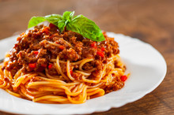

Spaghetti

Description
Easy thirty minute spaghetti recipe with simple ingredients.
Ingredients
- 1lb. ground beef
- 1 Tbsp olive oil
- 1 medium yellow onion
- 1 green bell pepper
- 1/2 cup chopped mushrooms
- 15oz. tomato sauce
- 15oz. diced tomatoes
- 2 cloves garlic
- 1 Tbsp parsley
- 2 tsp oregano
- 2 tsp basil
- 1 tsp salt
- 1/2 tsp pepper
- 8 oz. thin spaghetti noodles
Directions
- Bring 4 quarts of water to boil over high heat in a large pot; add salt if desired
- Chop the onion and green pepper, mince the garlic; in preperation
- Add olive oil to a large skillet over medium high heat
- Begin browning ground beef, stirring as needed to prevent sticking
- When the beef is mostly browned, very little pink showing, add the onions and bell pepper
- When the onion is translucent and beginning to soften, add the garlic, oregano, basil, parsley, salt and pepper. Stir continuously to prevent the garlic from burning, for one to three minutes, until fragrant.
- Stir in the diced tomatoes and the tomato sauce
- Bring sauce to a violent simmer and stir to prevent bubbling
- Reduce heat to medium low and cover partially with a lid
- Add spaghetti noodles to the boiling pot of water
- Add olive oil to boiling water and separate the noodles
- Set a timer for the recommended cook time for the noodles, stirring occasionally
- Stir pasta sauce occasionally
- Drain water from the noodles
- Portion noodles into dishes, cover with sauce and serve immediately